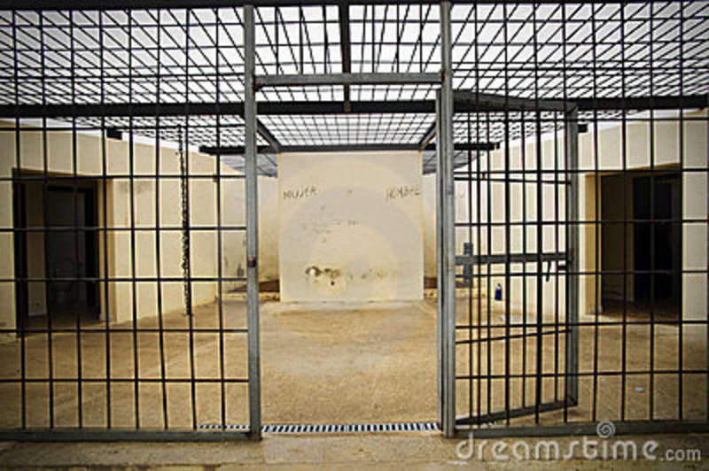

Wesker pega o carro para seguir sua jornada.
No caminho consegue ver que a cidade esta um caos.
Antes de ir para o hospital Wesker vai olhar uma das criaturas feitas para atacar a cidade.
Chegando ao local Wesker encontra a gaiola aberta.

O que fazer?
-
Ir embora
-
Procurar a Criatura.